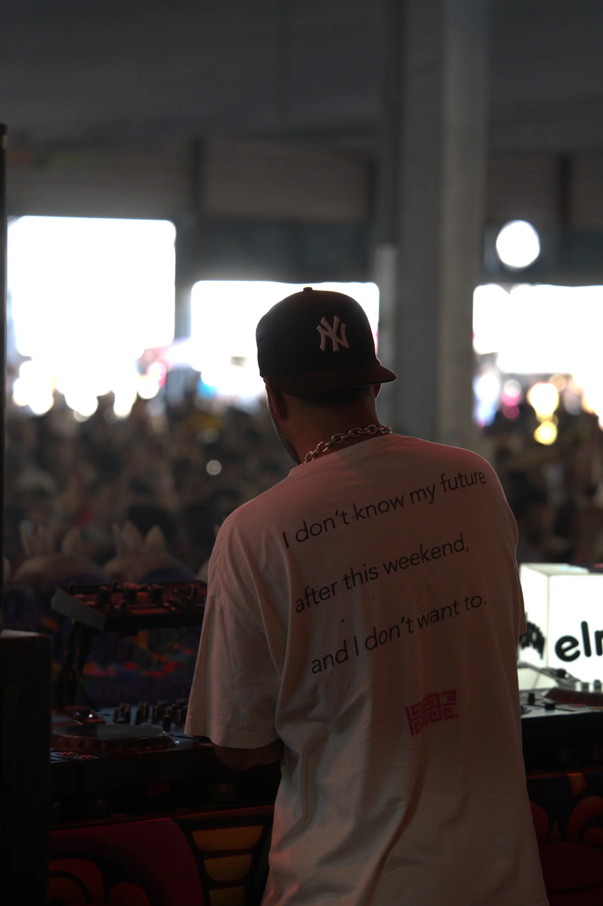
Armand Van Helden et son t-shirt Björk, « I don't know my future after this weekend, and I don't want to. » @ Elrow Stage - Family Piknik 2026 · Photo : Phat & Phurious FM
15 ans
anniversaire du festival
18 sets
suivis en deux jours
4 scènes
Elrow, Hard, Nomad, Tremplin
La bande-son
« Le son de la 15e », la playlist officielle du festival. Lancez-la et lisez la suite en musique, c'est meilleur comme ça.
Un festival qu'on regarde grandir depuis quinze ans
Il y a quelque chose de particulier à couvrir un festival qui se tient chez soi. Pas de logistique de voyage, pas de décalage, juste le tram L3 jusqu'à Pérols et l'impression étrange de voir débarquer dans son propre jardin des artistes qu'on suit depuis des années. Le Family Piknik fêtait ses quinze ans les 1 et 2 août, et pour la première fois on y était accrédités.
Le format a changé d'échelle mais garde sa colonne vertébrale : quatre scènes, plus de soixante artistes, de midi à deux heures du matin. L'Elrow Stage pour la fiesta et la House festive, le Hard Stage installé en intérieur dans un hall du parc, la Nomad Stage sous sa charpente en bois pour les sélections pointues, et la Scène Tremplin qui donne leur créneau aux talents de la région. Chacune avec sa population, son rythme, sa température.
Samedi : Armand Van Helden en guest star de l'Elrow Stage
On ouvre au Hard Stage avec 25EMEHEURE à 18h. La Parisienne, membre du collectif Organik, envoie une hard techno frontale, percussive, avec ce goût pour les vocaux qui la distingue de la production actuelle. Le hall est déjà bien rempli à cette heure-là, ce qui en dit long sur l'appétit du public pour les musiques dures.
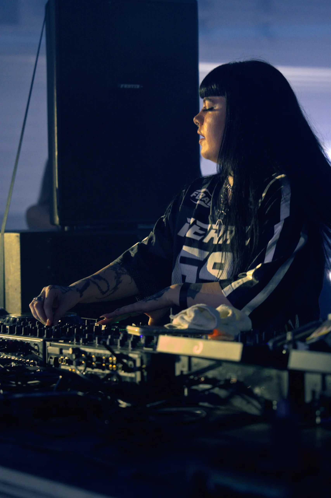
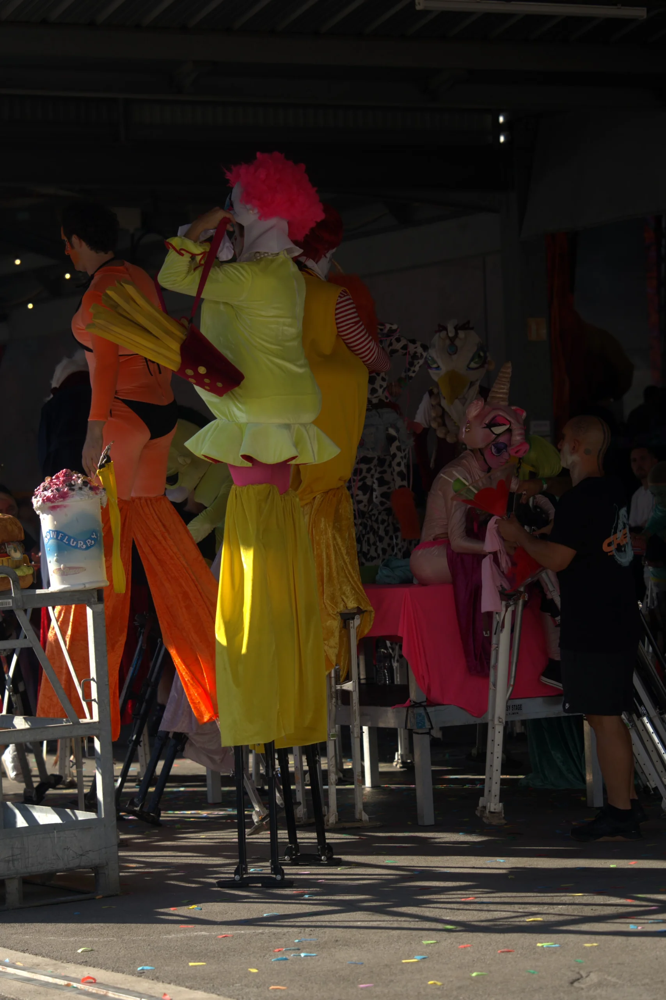
25EMEHEURE @ Hard Stage et les performers Elrow - Family Piknik 2026 · Photos : Phat & Phurious FM
Direction l'Elrow Stage pour 18h30. Digne représentant de la scène House new-yorkaise, Armand Van Helden vient si rarement dans le coin ! Sa venue a suscité une forte attente, et ça se sentait à la densité de la foule bien avant son créneau. Pendant près d'1h30, il enchaîne les classiques House à dominante Funk et Disco, sans jamais chercher l'esbroufe. Que des tubes, joués magistralement.
Le revers, c'est qu'un set 100 % classiques ne prend aucun risque. On savait à quoi s'attendre, et c'est exactement ce qu'on venait chercher. Ceux qui espéraient l'entendre creuser ailleurs, ou sortir deux ou trois raretés de son propre catalogue, sont restés sur leur faim.
Un détail qu'on ne pouvait pas rater, vu qu'il nous a tourné le dos une bonne partie du set : son t-shirt était un t-shirt Björk, le portrait de la chanteuse au recto et le refrain de Big Time Sensuality imprimé au dos. « I don't know my future after this weekend, and I don't want to. » On cherche encore un meilleur programme pour un samedi soir de festival !
Sa tracklist fédératrice combinée à l'ambiance carnaval façon Elrow, c'était de la pure folie. Pour ceux qui n'ont jamais fait l'expérience d'une soirée Elrow : attendez-vous à une scénographie spectaculaire et de qualité. Des dizaines de performers déjantés (comédiens, acrobates, personnages costumés) investissent la scène, déambulent et interagissent avec le public. Ajoutez les mascottes géantes et les tonnes de confettis. La fête est immersive, très visuelle, et l'ambiance est unique.
Sauf que le public tenait largement la comparaison. Un ami à nous se baladait avec une piscine gonflable en guise de pantalon, canard jaune posé dedans et un pistolet à bulles dans chaque main. Ailleurs sur le site, une bande entière en slip de bain et rien d'autre, ou encore un type en coiffe à plumes qui traversait la foule sans que personne ne relève. Elrow met la barre très haut côté costumes, on a connu des publics qui faisaient moins d'efforts pour suivre.
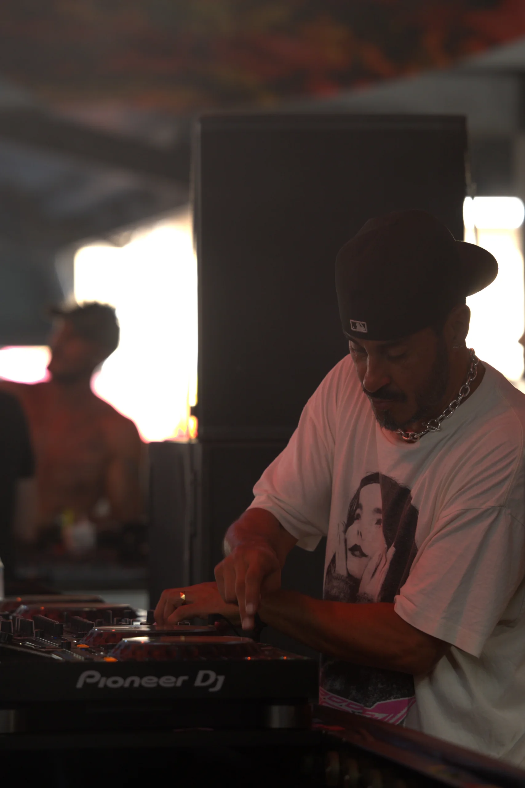
Armand Van Helden @ Elrow Stage - Family Piknik 2026 · Photo : Phat & Phurious FM
Le chassé-croisé du samedi soir
Retour au Hard Stage pour Todiefor à 19h, puis Creeds à 20h. Entre les deux, un crochet par la Nomad Stage pour un autre pilier de la scène électronique française : Kiko b2b Lucye ! Habitué de Family Piknik, Kiko signe avec Lucye l'un des sets les plus solides du samedi. Intense et parfaitement maîtrisé. Un format qui met en valeur leur complémentarité plutôt que de les faire se marcher dessus.
À 20h45, la Scène Tremplin accueillait IRINA sur de la hypnotic groove techno. La salle est toute petite et elle était bien remplie, ce qui n'a rien d'évident à cette heure-là avec trois autres scènes qui tournent à plein régime dehors. C'est précisément le genre de créneau qu'on ne devrait jamais négliger dans un live report : ces scènes sont l'endroit où se construisent les carrières locales. Et quand c'est ta région, tu les regardes autrement. Dans deux ans, ces noms-là seront sur les affiches qu'on croise en ville.
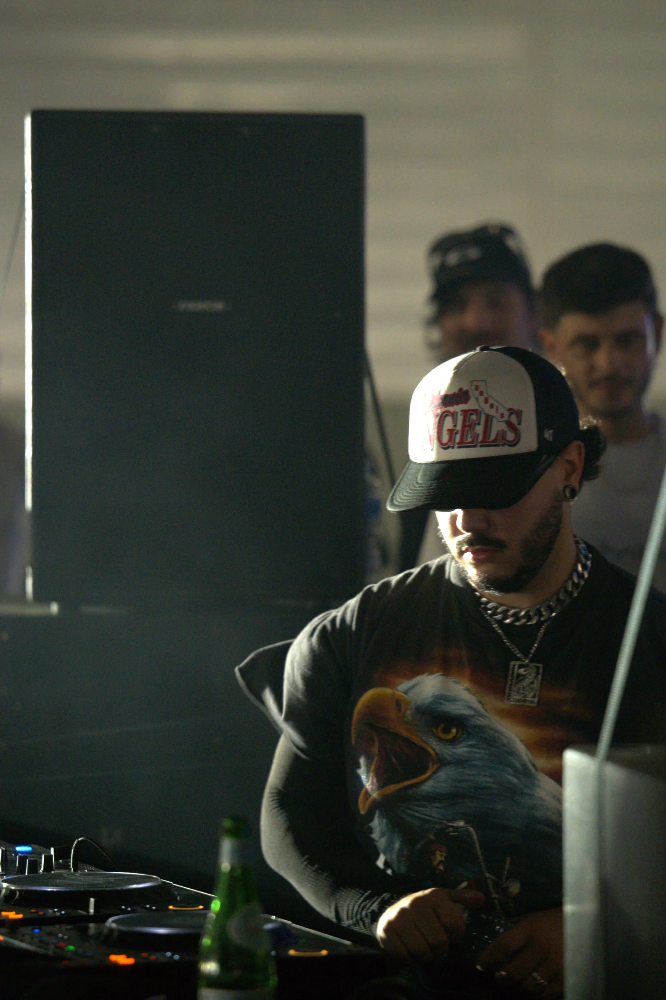
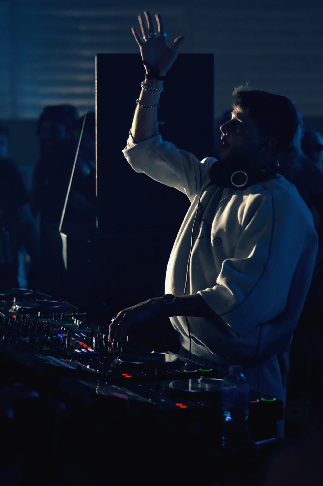
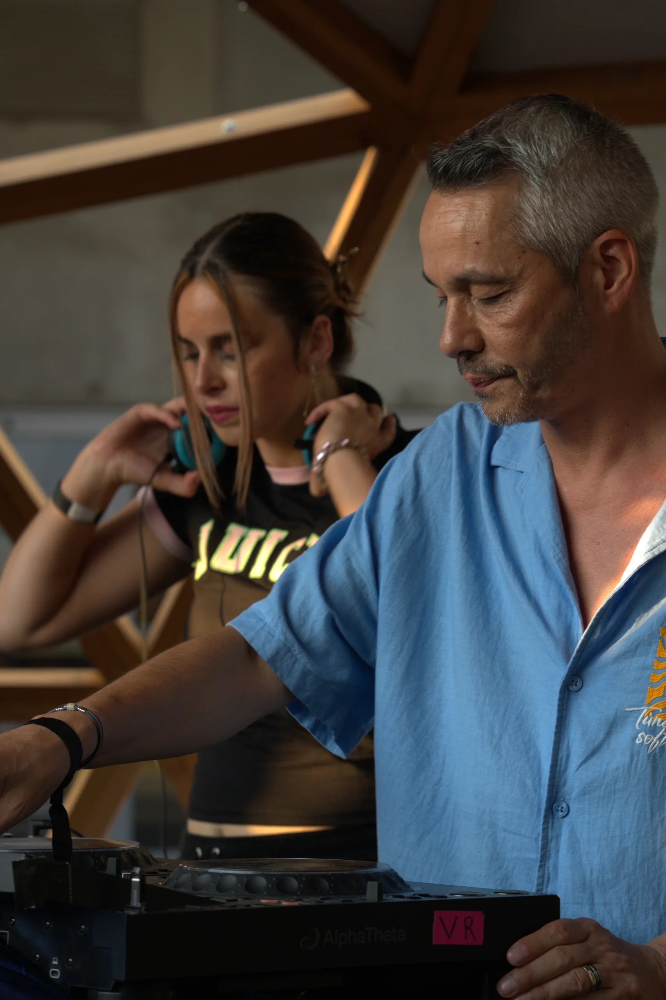
Todiefor, Creeds et Kiko b2b Lucye - Family Piknik 2026 · Photos : Phat & Phurious FM
La Nomad Stage, le refuge des curieux
Sur la Nomad Stage by Afterseason, le Family Piknik a fait le choix d'une programmation plus intimiste, curieuse et tournée vers les passionnés d'électronique. Une approche résolument underground, sous une charpente en bois barrée d'un néon rouge. Le contraste avec la démesure d'Elrow est saisissant, et c'est exactement ce qui rend le site intéressant à parcourir.
Étienne de Crécy y jouait à 21h, chemise en jean sur le dos comme une signature. Un set toujours élégant et fédérateur, sans effets spectaculaires. Artiste à forte identité musicale, il a rappelé pourquoi le pionnier de la French Touch demeure une référence incontournable. Et il ne s'est pas arrêté à l'heure prévue : il a largement débordé sur le créneau suivant, rejoint aux platines par Erol Alkan venu lui prêter main forte. Ce b2b imprévu en a ravi plus d'un !
Brina Knauss a elle aussi marqué la Nomad Stage, avec un set qui s'inscrivait parfaitement dans l'identité mélodique et immersive de cette scène. Mêlant Melodic House et techno atmosphérique, elle a offert une sélection tout en finesse, portée par des montées progressives et des textures travaillées.
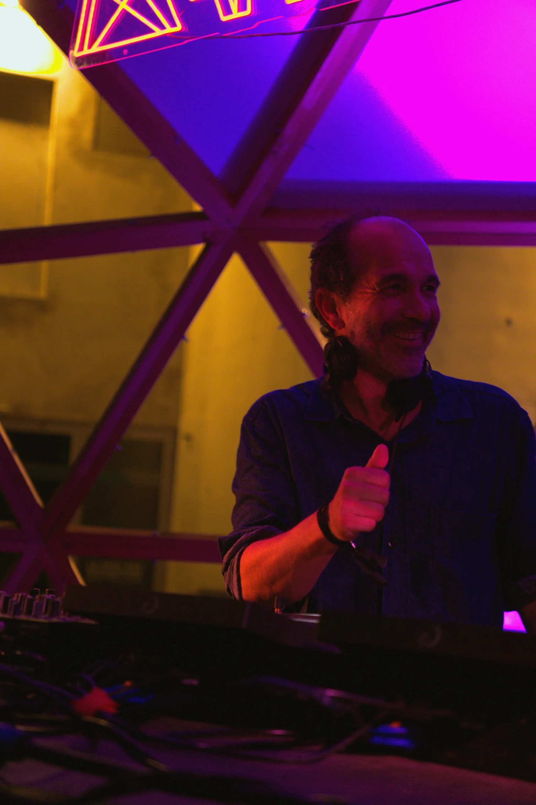
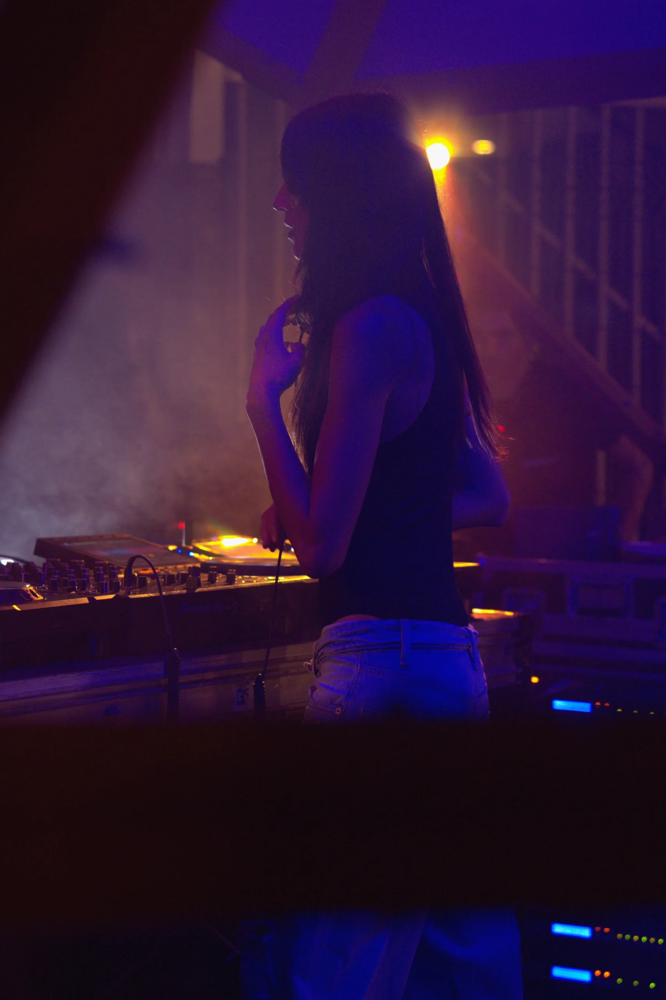
Étienne de Crécy et Brina Knauss @ Nomad Stage - Family Piknik 2026 · Photos : Phat & Phurious FM
À minuit, Alkan revient sur la même scène, cette fois avec Roman Flügel, pour ce qui restera probablement l'un des sets les plus pointus de toute la programmation. Une sélection exigeante et un sens rare de la narration musicale. Leur proximité musicale remonte à longtemps, vers les années 2010, et Flügel a signé quelques EP chez Phantasy, le label d'Alkan, dont il fait partie des artistes phares. Ça s'entend.
D'un côté, Roman Flügel, reconnu pour son éclectisme. Il passe avec une grande fluidité de la House minimale à la techno hypnotique, en intégrant souvent de l'IDM, de l'acid ou des sonorités plus expérimentales. De l'autre, Erol Alkan, qui aime mélanger techno, electro, cosmic disco, krautrock, breaks et morceaux psychédéliques. Les deux partagent plusieurs affinités : les transitions longues, une progression organique du set plutôt que les drops et les ruptures brusques, un goût pour les morceaux rares, les edits exclusifs et les classiques revisités. C'est précisément ce qui fait que leur b2b fonctionne si bien !
Un set salué pour son éclectisme et sa profondeur, à contre-courant des formats plus conventionnels des grands festivals.
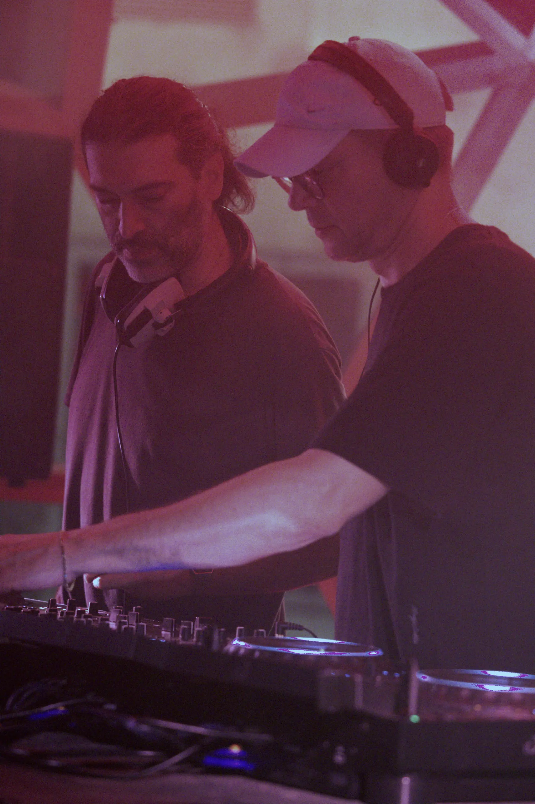
Roman Flügel b2b Erol Alkan @ Nomad Stage - Family Piknik 2026 · Photo : Phat & Phurious FM
Hysta, ou l'art de tromper son monde
Minuit également au Hard Stage, et c'est notre claque du samedi. C'est aussi le seul accroc qu'on trouvera à cette programmation : Hysta et le b2b Flügel / Alkan démarraient à la même minute, sur deux scènes opposées. Deux des plus beaux moments du week-end, et un festivalier ne peut pas être aux deux endroits. Sur une affiche aussi dense, ce genre d'arbitrage frustre.
Hysta arrive tout sourire, l'air parfaitement détendue, et pendant une heure elle balance de la frappe atomique. Le décalage entre la décontraction affichée et la violence du son est total, le public ne s'y trompe pas une seconde, et la main room est pleine à craquer.
Space 92 referme un samedi qui ne redescend pas
Le samedi se referme à 00h30 sur l'Elrow Stage avec Space 92, maillot de hockey sur le dos. À cette heure-là, on s'attend à voir le site se vider doucement et les derniers courageux tenir par principe. C'est exactement l'inverse qui s'est produit : le public était en délire, l'énergie est montée d'un cran au lieu de retomber, et la scénographie Elrow a sorti ses dernières cartouches de confettis comme s'il était minuit moins le quart. Le Français a tenu sa foule jusqu'au bout avant de renvoyer tout le monde au lit dans le désordre !
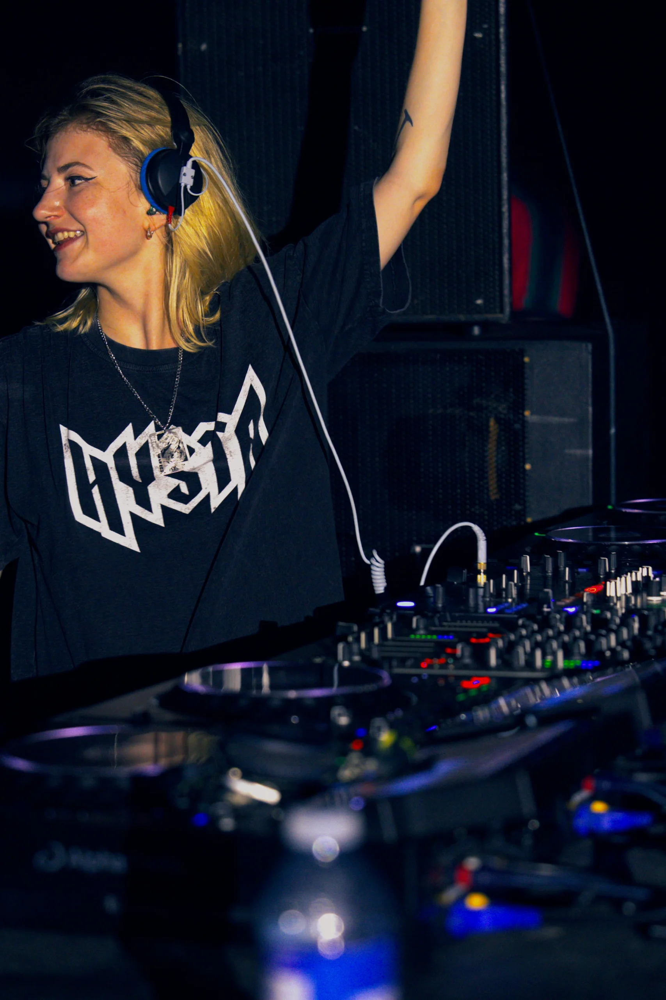
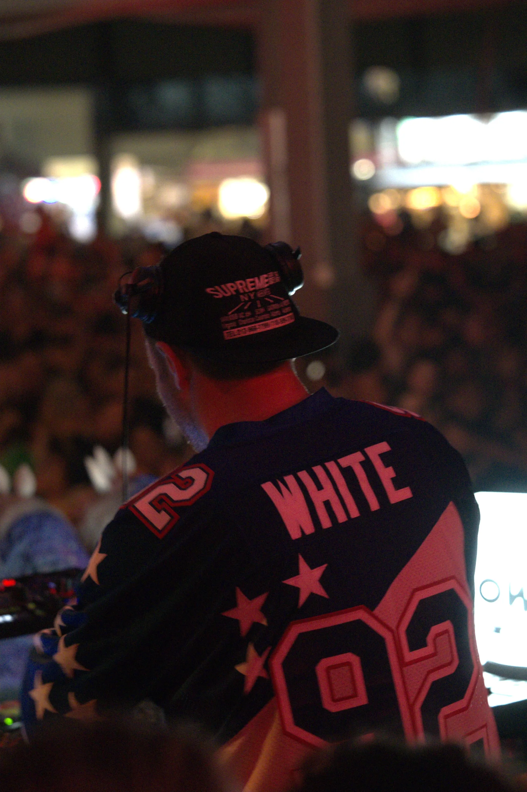
Hysta @ Hard Stage et Space 92 @ Elrow Stage - Family Piknik 2026 · Photos : Phat & Phurious FM
Dimanche : la journée House
Le dimanche change de couleur, du moins sur une partie du site. Moins de kicks, plus de groove, un public d'humeur à danser. Le Hard Stage, lui, tabassait autant que la veille : la journée n'était pas plus douce, elle était plus contrastée. Chelina Manuhutu ouvre notre journée à 18h sur l'Elrow Stage. Née à Amsterdam d'un père indonésien et d'une mère néerlandaise, installée à Ibiza, elle s'est fait un nom sur une tech house groovy traversée de percussions afro et latines. Sur le papier, un créneau de début de soirée. Dans les faits, tout le monde était déjà en mouvement au bout de dix minutes. Le genre de set qui donne le ton d'une journée.
Pendant ce temps, Xandy tenait la Scène Tremplin. Au Hard Stage, désormais curaté par Procrastination, Blakeys prend le relais à 19h. Le Français est un habitué du collectif, avec qui il tourne régulièrement, et il envoie une acid rave brute et galopante, saturée jusqu'à la moelle. À 19h un dimanche, le hall aurait pu se remplir tranquillement. Il était déjà plein.
À 20h, CEBB occupe la Nomad Stage, passée ce jour-là sous bannière United et Paillote Paradise. Autant dire à domicile : le Montpelliérain est un pilier de la Paillote, à Aigues-Mortes, à une demi-heure de route du Parc des Expositions. Sa house solaire collait à l'heure, au lieu et à la température. Puis vient le set qu'on n'attendait pas.
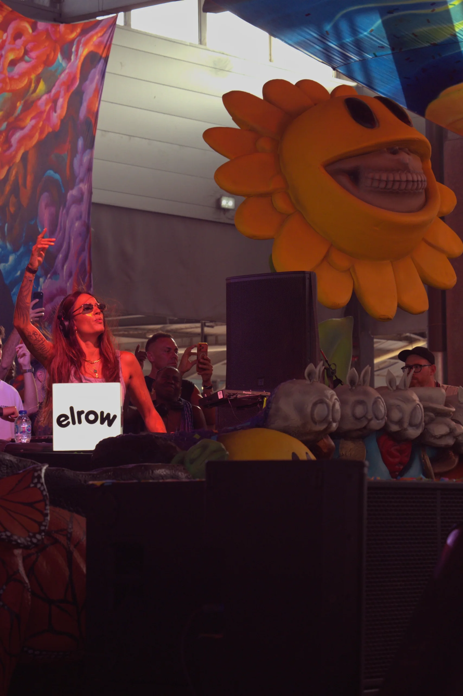
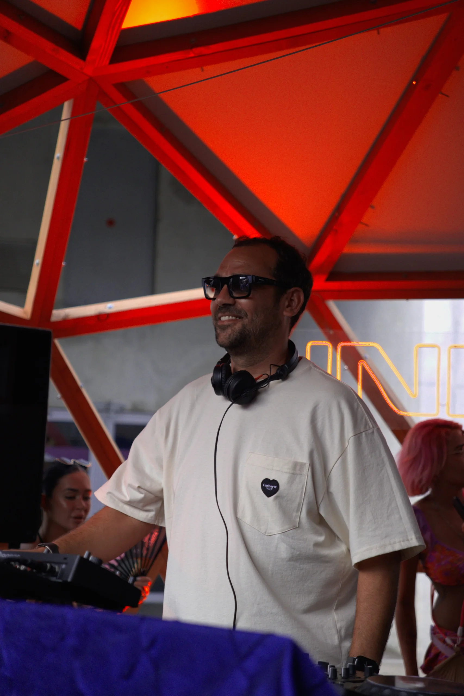
Chelina Manuhutu @ Elrow Stage et CEBB @ Nomad Stage - Family Piknik 2026 · Photos : Phat & Phurious FM
Blond:ish, la révélation du dimanche
Blond:ish à 21h, qu'on ne connaissait que de nom. Une heure plus tard, on était embarqués, et on n'était pas les seuls : elle a fait l'unanimité sur l'Elrow Stage. Un set bien ficelé entre House mélodique, une touche de Pop et des rythmes afro, qui rappelle l'esthétique Defected. Elle a su maintenir une belle dynamique tout du long, et à chaque montée la scénographie démesurée d'Elrow prenait le relais. Une sélection à la fois pointue, accessible et résolument feel good. Blond:ish, une valeur sûre.
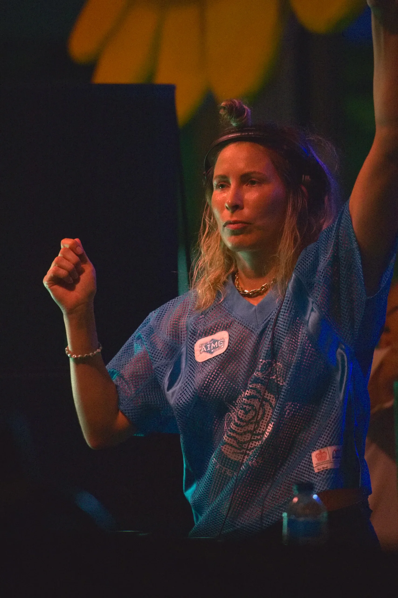
Blond:ish @ Elrow Stage - Family Piknik 2026 · Photo : Phat & Phurious FM
Rebekah, pionnière d'une techno industrielle sans concession
Fin de soirée au Hard Stage. William Luck chauffe la salle à 22h, et le mot est faible. Le Parisien s'est fait un nom sur une hard techno brutale et viscérale, nourrie de culture rave underground et de schranz du début des années 2000. Il a préparé le terrain sans jamais lever le pied.
Puis Rebekah arrive à 23h et change complètement la nature de l'endroit. Derrière une présence scénique classieuse se cache une véritable force de frappe, à la croisée de la techno industrielle et des sonorités hard dance.
Son set sans compromis marque par sa puissance et sa précision, transformant la scène et le dancefloor en terrain d'expression et d'explosion. Car oui, l'intensité musicale ne se mesure pas uniquement aux BPM, mais aussi à la personnalité et à la vision de l'artiste qui la porte. Une performance qui force le respect. Elle a clairement apporté une autre dimension au Hard Stage, là où la plupart des sets de la journée cherchaient l'impact immédiat. Une signature reconnaissable dès les premières mesures, qui confirme pourquoi Rebekah est une figure iconique du genre.
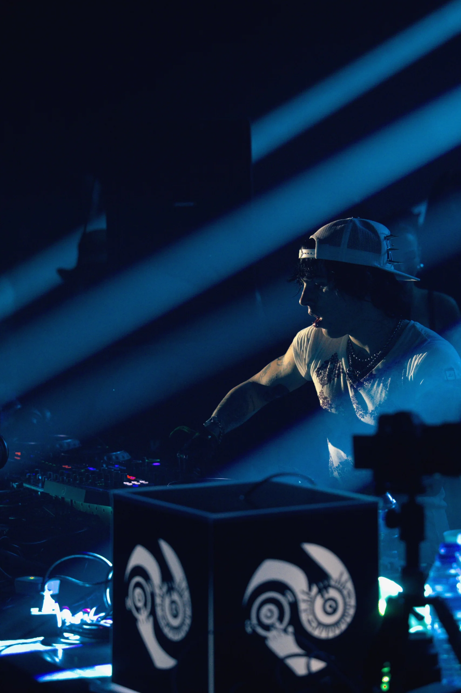
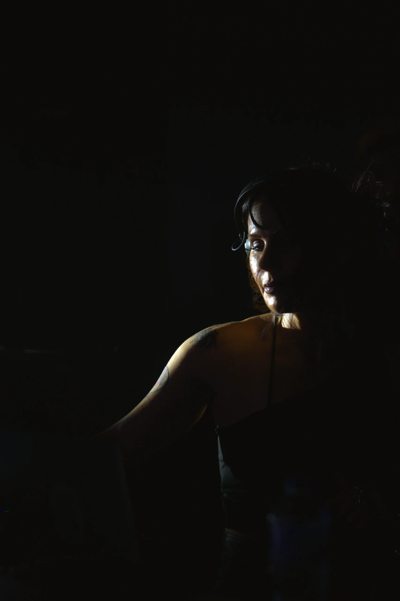

William Luck et Rebekah @ Hard Stage - Family Piknik 2026 · Photos : Phat & Phurious FM
Le Hard Stage, la vraie surprise de l'édition
S'il fallait retenir une tendance de ce week-end, ce serait celle-là. Une programmation de kicks ravageurs, et une main room comble durant les deux jours du festival, du début à la fin, avec un public qui connaissait les morceaux et venait spécifiquement pour ça. L'immense intérêt pour les musiques hard n'est plus une niche, c'est une lame de fond, et le Family Piknik a eu le nez creux en confiant la programmation à Organik le samedi puis à Procrastination le dimanche.
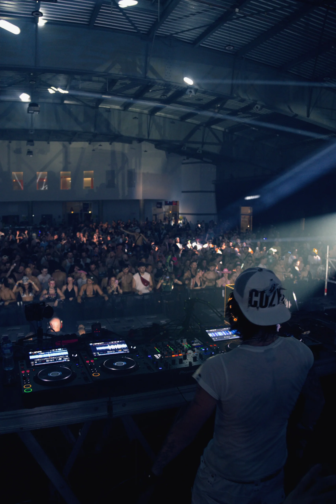
Hard Stage - Family Piknik 2026 · Photo : Phat & Phurious FM
Notre bilan du Family Piknik 2026
Parlons de ce qui fait ou défait un festival en août dans l'Hérault : la chaleur. Elle était extrême les deux jours. L'organisation avait installé des ventilateurs brumisateurs un peu partout et ça change tout, on y revenait volontiers entre deux sets.
Le point noir du site, c'est le hall du Hard Stage. Aucune climatisation, une main room pleine deux jours d'affilée, et une chaleur qui devenait franchement difficile à tenir en fin de soirée. On veut bien croire qu'une clim n'aurait pas suffi sur une pareille surface, mais il y a là un vrai sujet pour les prochaines éditions, d'autant que le festival mise de plus en plus sur cette scène.
Bon point pour les distributeurs automatiques de bière disséminés sur le site : l'attente était correcte partout, et le tarif plus doux qu'au bar, 8 euros les 40 cl contre 10 euros au comptoir. Ça reste cher, mais c'est dans la moyenne de ce que pratiquent les festivals aujourd'hui.
Côté food trucks, large choix et vraie qualité. On a goûté à pas mal de choses, sans aucune fierté : cuisine belge, barbecue fumé, glaces italiennes, churros en dessert. Comptez entre 5 et 15 euros le plat selon ce que vous prenez. C'est un point sur lequel beaucoup de festivals se contentent du minimum, ici clairement pas.
Quinze ans, et le Family Piknik donne l'impression d'avoir trouvé son équilibre : assez gros pour faire venir Armand Van Helden et Elrow, assez fin pour offrir une Nomad Stage exigeante et une scène tremplin qui compte vraiment. On habite à vingt minutes, et on sera là l'an prochain.
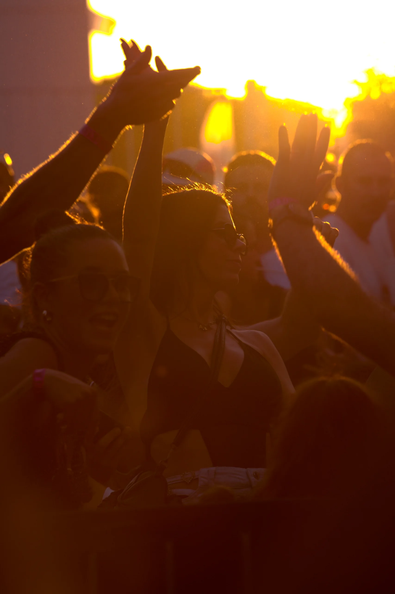
Family Piknik 2026 · Photo : Phat & Phurious FM
Photos
Galerie Family Piknik 2026
70 clichés, samedi & dimanche
Vidéos
Live Report vidéo — Family Piknik 2026
Les zappings du samedi et du dimanche arrivent
Rédaction : Phat et Lolita, également plume de Focus Magazine. Reportage photo : Phat & Phurious FM. Merci à l'équipe presse du Family Piknik pour l'accréditation.